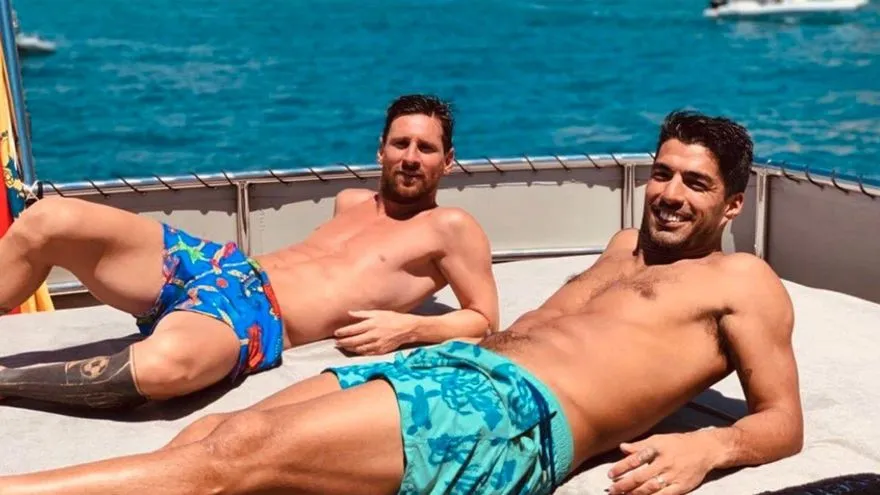
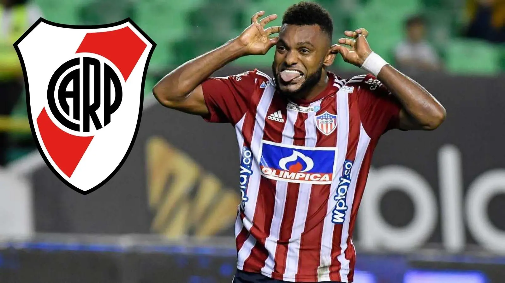

SUÁREZ SIGUE DE VACACIONES MIENTRAS RIVER ESPERA

A horas de jugarse la clasificación a los Cuartos
de final de la Copa Libertadores, Luis Suárez continúa con sus relajantes
vacaciones en España. En compañia de su familia y de Lio Messi, el uruguayo
tendría la decisión de tomar de venir al Millonario con la condición
de que el equipo acceda a una nueva fase del torneo continental más importante
de Sudamérica. Por eso, el partido de esta noche ante Vélez no sólo podría
significar el avance en la competición, sino la ratificación de que uno
de los mejores jugadores del mundo vestirá el Manto Sagrado
BORJA: DE SER CONFIRMADO A ESTAR PRÁCTICAMENTE DESCARTADO

Después de tantas idas y venidas, de la intromisión de Palmerias
(dueño del 50% de la ficha del jugador) y que la transferencia casi se caiga, apareció
un nuevo imponderable que complicó la transacción: el contexto económico argentino.
La renuncia del Ministro de Economía, Martín Guzmán, con las consecuentes medidas
aún más restrictivas para el manejo de los dólares, dejó estancada la llegada de Miguel Borja.
Es más, desde Colombia dan por hecho que el pase no se hace y el futbolista ya fue avisado
que debe retornar a los entrenamientos con Junior. La situación solo podría volver a
encausarse si River vence a Vélez y la dirigencia pide una extensión al Banco Central
para poder girar las divisas al exterior.